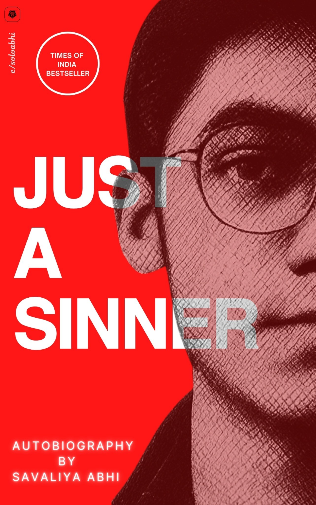
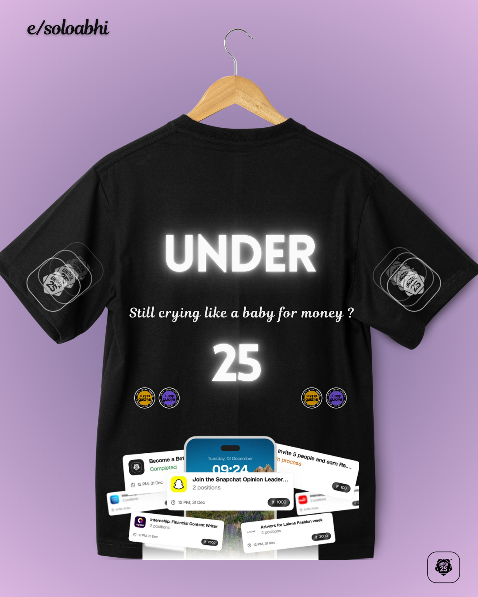
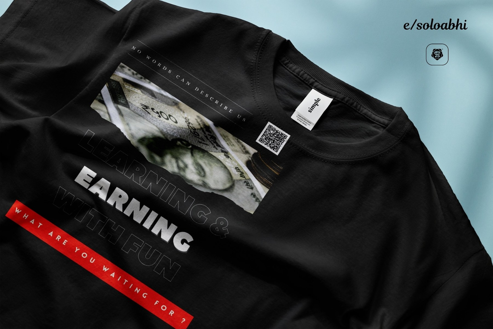
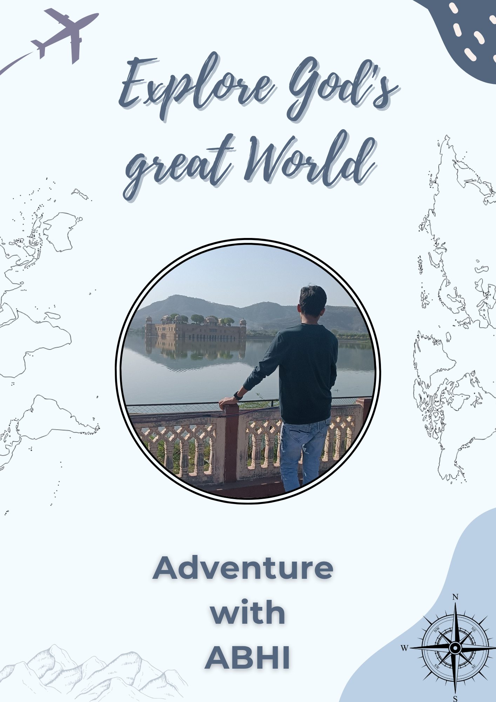

↗
↗
Under 25 Summit
Event-focused visual concept using a strong headline, community imagery and a high-contrast palette.
BUSINESS × CREATIVITY × INITIATIVE
I'm Abhi Savaliya — a BBA Digital Business & Entrepreneurship student at IIM Bangalore, exploring the space where business thinking meets visual storytelling.
 STUDENT
STUDENTI enjoy understanding why people connect with ideas, products and brands — and then finding creative ways to communicate those ideas.
I'm currently studying Digital Business & Entrepreneurship at IIM Bangalore. Alongside my coursework, I've explored content creation, graphic design and social media projects through independent work and the Under 25 platform.
I like moving between the analytical and the imaginative: one day thinking about a business problem, another day shaping a poster, campaign visual or short-form video.
A selection of creative explorations and work samples. Each piece reflects a different brief, subject or visual direction.
↗
Event-focused visual concept using a strong headline, community imagery and a high-contrast palette.

↗An editorial-style cover experiment built around portrait treatment and oversized type.
 ↗
↗
A motorsport poster study exploring contrast, dramatic lighting and layered typography.

↗A T-shirt mock-up exploring how a platform identity can translate into wearable design.

↗A graphic-led apparel concept combining a short message, image treatment and bold composition.

↗A travel-inspired composition using a personal photograph, map details and an illustrated editorial feel.
Some visuals are personal or concept explorations. Project descriptions will be updated with the exact brief and role wherever applicable.
I value opportunities where I can take an idea from a rough thought to something people can see, use or respond to.
Zolon Hardware Pvt. Ltd. · Junagadh
Worked on promotional and informational video content, including a factory-launch video. The CV also records selection as a company representative for a national industry exhibition in New Delhi and a subsequent paid marketing internship offer.
Under 25 · Freelance projects
Created graphic design and video content through platform projects and missions, generating approximately ₹45,000 in earnings within one year.
IIM Bangalore
Building foundations in business, digital platforms and entrepreneurship while continuing to explore creative work.
Independent earnings from creative work on Under 25 within one year.
Bachelor of Business Administration — Digital Business & Entrepreneurship
Grade 12: 92.43 percentile · Grade 10: 96.10 percentile
Primary education